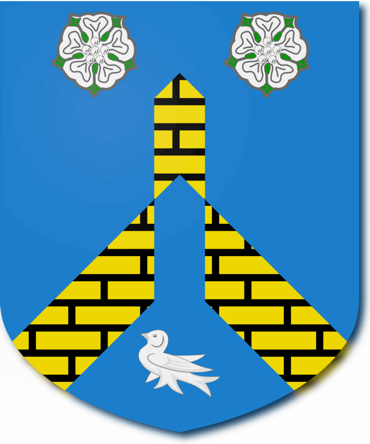

These arms were suggested by a DrawShield user, who provided the following additional information:
The arms of Mr Bernard C Martin, retired engineer. The crest is an open fetterlock emblem of tolerance, the chevron rompu a north country church gable. Cadences are in the arms of Professor Stephen Martin retired neuropsychiatrist with a label of 3 points ermine, of Mr Edward Martin deputy head teacher a label of 5 points ermine, of Mr Richard Martin spacecraft engineer and 2nd Lt British Army Reserve a label of a crescent.
If you would like to modify this blazon and see the effects click here to copy it into the "create" page. (The final drawing instructions are not part of the original blazon but position the martlett a little better given the rather large chevron rompu that DrawShield uses)